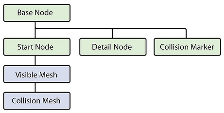
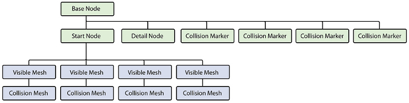

Introduction to Destructible ObjectsIn Torque 3D 1.1, destructible objects are created by building multiple states of an object (unbroken and broken) and swapping between them when appropriate. Once swapped, the pieces of the broken mesh can become physical. The physicsShape.cs file is used to tell the engine how to swap out the undamaged and damaged states.
 The crate is made up of two separate mesh files. Both are set up like traditional Torque 3D files, with an exception for the children of the Start Node. In this example, the meshes only have a single LOD.
(click to enlarge) 
(click to enlarge) Note: A destructible object can have just a single physical collision volume for the broken mesh. For example, you might want a destructible barrel that does not become multiple pieces after the explosion; just a single dented barrel. The same process would be used to swap between the unbroken and broken version of the barrel. Setting Up CollisionCollision is set up in the traditional Torque fashion. Collision meshes are under the Start Node. Collision marker nodes are under the Base Node, using the standard prefix col- to represent a convex collision mesh.
Hierarchy For Meshes With Multiple LODsMultiple LODs require a slightly different setup than the crate example above. To set up your mesh so that the broken (aka "debris") pieces, can LOD properly, an "LOD helper" must be a parent of the collision volume and meshes for all levels of detail for any given debris piece:
The LOD helpers are dummy objects, which can be named anything as long as they do not end in a number. T3D would read this as an LOD level. None of the node names are critical, as long as they end in the proper detail level number and do not contain numbers otherwise. Aligning the Pivot PointsThe pivot points of any renderable mesh and its associated collision volume must share the same coordinates and orientation. An easy method to align these is setting the pivot points of all objects to 0,0,0 in world-space. The pivot points do not need to be in the center of the object they represent. Zero TransformsShapes often need to have their transforms reset after being modeled so they align properly with their collision volume. Two approaches include using the traditional "box trick" method, or using modeling applications that have a native method for resetting transforms. Setting up the physicsShape.cs fileThe physicsShape.cs file goes in the same directory as the unbroken and broken meshes. For each destructible object, two datablocks are needed:
datablock PhysicsDebrisData( CrateSquareDebris )
{
lifetime = 60.0;
lifetimeVariance = 0.0;
velocity = 0.1;
velocityVariance = 0;
shapeFile = "art/shapes/physicsShapes/crate_square_broken.DAE";
mass = 10;
dynamicFriction = 0;
staticFriction = 0.5;
restitution = 0.0;
linearDamping = 0.0;
angularDamping = 0.0;
linearSleepThreshold = 1.0;
angularSleepThreshold = 1.0;
waterDampingScale = 1.0;
buoyancyDensity = 0.0;
castShadows = "1";
friction = "0.4";
};
datablock PhysicsShapeData( PSCrateSquare )
{
category = "PhysicsShape";
shapeName = "art/shapes/physicsShapes/crate_square_unbroken.DAE";
emap = 1;
mass = 5;
massCenter = "0 0 0"; // Center of mass for rigid body
massBox = "0 0 0"; // Size of box used for moment of inertia,
// if zero it defaults to object bounding box
drag = 0.2; // Drag coefficient
bodyFriction = 0.2;
bodyRestitution = 0.1;
minImpactSpeed = 5; // Impacts over this invoke the script callback
softImpactSpeed = 5; // Play SoftImpact Sound
hardImpactSpeed = 15; // Play HardImpact Sound
integration = 4; // Physics integration: TickSec/Rate
collisionTol = 0.1; // Collision distance tolerance
contactTol = 0.1; // Contact velocity tolerance
minRollSpeed = 10;
maxDrag = 0.5;
minDrag = 0.01;
triggerDustHeight = 1;
dustHeight = 10;
dragForce = 0.05;
vertFactor = 0.05;
normalForce = 0.05;
restorativeForce = 0.05;
rollForce = 0.05;
pitchForce = 0.05;
debris = CrateSquareDebris;
friction = "0.4";
linearDamping = "0.1";
angularDamping = "0.2";
buoyancyDensity = "0.9";
staticFriction = "0.5";
explosion = WoodMinorExplosion;
radiusDamage = 0;
damageRadius = 0;
areaImpulse = 0;
restitution = "0.3";
invulnerable = "0";
waterDampingScale = "10";
};
Building a destructible object with more than one damage statesA destructible object can be built with multiple successive damage states. This way the player can slightly damage an object, then fully damage an object:


(click to see full image)
// fence 1 broken state A
datablock PhysicsDebrisData( PSfence1Adebris )
{
lifetime = 60.0;
lifetimeVariance = 0.0;
velocity = 0.1;
velocityVariance = 0;
shapeFile = "art/shapes/physicsShapes/fence_1_bkstate_a.DAE";
mass = 1.5;
dynamicFriction = 0;
staticFriction = 0.3;
restitution = 0.0;
linearDamping = 0.1;
angularDamping = 0.1;
linearSleepThreshold = 1.0;
angularSleepThreshold = 1.0;
waterDampingScale = 10;
buoyancyDensity = 0.8;
friction = "0.2";
};
datablock PhysicsShapeData( PSfence1A )
{
category = "PhysicsShape";
shapeName = "art/shapes/physicsShapes/fence_1_unbk.DAE";
mass = 0;
debris =PSfence1Adebris;
explosion = "SplinterExplosion";
friction = "0.1";
linearDamping = "0.1";
angularDamping = "0.1";
buoyancyDensity = "0.2";
staticFriction = "0.1";
restitution = "0.3";
invulnerable = "0";
minDamageAmount = "0.5";
destroyedShape = "PSfence1B";
};
// fence 1 broken state B
datablock PhysicsDebrisData( PSfence1Bdebris )
{
lifetime = 60.0;
lifetimeVariance = 0.0;
velocity = 0.1;
velocityVariance = 0;
shapeFile = "art/shapes/physicsShapes/fence_1_bkstate_b.DAE";
mass = 1.5;
dynamicFriction = 0;
staticFriction = 0.3;
restitution = 0.0;
linearDamping = 0.1;
angularDamping = 0.1;
linearSleepThreshold = 1.0;
angularSleepThreshold = 1.0;
waterDampingScale = 10;
buoyancyDensity = 0.8;
friction = "0.2";
};
datablock PhysicsShapeData( PSfence1baseB )
{
category = "PhysicsShape";
shapeName = "art/shapes/physicsShapes/fence_1_bkbase_b.DAE";
mass = 0;
invulnerable = "1";
};
datablock PhysicsShapeData( PSfence1B )
{
category = "PhysicsShape";
shapeName = "art/shapes/physicsShapes/fence_1_bkbase_a.DAE";
mass = 0;
debris =PSfence1Bdebris;
explosion = "SplinterExplosion";
friction = "0.1";
linearDamping = "0.1";
angularDamping = "0.1";
buoyancyDensity = "0.2";
staticFriction = "0.1";
restitution = "0.3";
invulnerable = "0";
minDamageAmount = "1.25";
destroyedShape = "PSfence1baseB";
};
Null LODsTo minimize performance overhead of having a large number of physical shapes, any hierarchy can be given a "Null LOD" detail marker. The detail number of the next LOD marker will denote when the meshes should disappear.
ConclusionThis tutorial covered the process of adding destructible objects to your T3D game by building multiple states of an object. This feature greatly enhances interaction and immersion, so plan ahead when creating your art and designing levels. You can download the sample 3DS Max files shown in this guide by clicking HERE. |
{kind=link}
{kind=link}
{kind=link}
{kind=link}
{kind=link}
{kind=link}